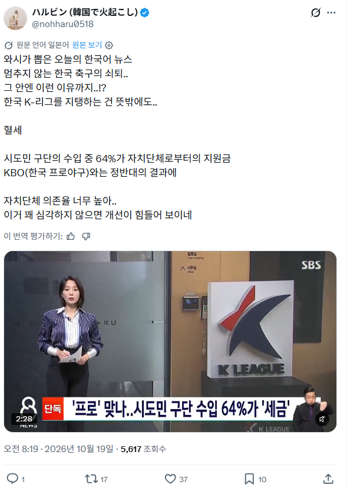

한국축구, 국민 혈세로 운영되고 있었다.jpg
댓글
이건 정치 이야기가 나올 수 밖에 없음
사람도 없는 지방에서 재미도 없는 축구보는 사람들이 얼마나있다고 세금 100억 150억 투입해서 유지해야할 이유가 있나 싶음
다 쳐내야지.
진짜 딱 반대였으면 야구는 온갖 개소리 다 들었을텐데
축빠새끼들 정치에 영향력 엄청나긴 하더라..
의경 복무하던 경찰청팀인 아산 해체할 때 축구인들과 축빠들 몰려가서 지랄하던거 생각나네
아산시 예산이 연간 얼마인데 축구단 운영비가 얼마인데 그거도 못쓰냐고
맡겨둔거처럼 지랄이 심했지
아산경찰청 밑에 있던 유소년팀들 애들은 어떡하냐는 소리와 함께
개독교 광신도 저리가라임
그러고보니 축구계는 개신교랑도 연결이 많이 되어있네
그옛날 할렐루야팀부터
애완종양이었네
애완도 아님 그냥 캣망구들임 돈만 뿌리고 감사도 제대로 안함
캣맘에 가깝긴 하네ㅋㅋㅋㅋㅋㅋㅋ좋은건 오롯이 내 몫이고 고통은 다른 사람들이 분담
스포츠에 세금 다 때 ㅅㅂ
저거 1년 운영할때마다 잼버리가 개최된다는데 진짠가...
매년 천억 이상씩 들여서 국내 리그 규모 키웠는디 하필 월드컵 조별 탈락이라서 꿀조라는 평가 많았는데
구자욱한테 세금 뜯어다가 세징야 연봉주는 레전드 스포츠ㅋㅋㅋㅋㅋㅋㅋㅋ
니들 월급에서 뗀 세금으로 내가 즐기는 레저ㅋㅋ
한국축구 망해도 상관없으니 싹다 빼버려
저러고 글로벌 경쟁력이 늘어난것도 아니고
선수들 몸값만 뻥튀기 됨
그리고 축구인들 개꿀통 만들어짐 ㅋㅋㅋ
그렇게 해서 홍명보 20억받음
공놀이같은거 세금아까우니깐 싹다 가스실로

관중동원력이 리그유지할정도도 못하다는 소리아님?
인기있는 스포츠긴한거임?
인기 좆도 없음. 사실상 관객 동원력이 야구 1/10 수준인데 그나마도 가는 새끼들만 또 가는거고.
축구는 2부리그까지 다 합쳐야 겨우 3백만이고 야구는 2부리그 빼고도 천만ㅋㅋ
축구보단 여자 배구쪽이 세금 적게먹고 기업중심으로 돌아감ㅋ
솔직히 한국축구에 세금투입 너무 되는데 축구발전 어쩌고 까진 이해하겠는데 축구인이라는 새끼들이 세금으로 해먹는걸 너무 당연하게 여기고 필수재느낌으로 돈 더내놔 이따구로 구는게 어처구니없음
싹다쳐내자
기업지원금+입장료 로 유지 못하면 해채해야지
다 없애라
그깟 공놀이 하지마 이쉨히들아
나는 엘리트체육 왜 지원해야하는지 모르겠다
한국이 올림픽에 목숨걸어서 나라 이름을 알려야 하는 체급도 아니고
그런 시대도 아니고 이제 스포츠는 순수 개인의 영광과 취미의 영역 아님?
생활체육으로 전환해서 시민들 건강증진 목적의 체육이나 장려하는게 맞지않나
ㄹㅇ 심지어 이미 야구나 여자배구같은 메이저 스포츠는 기업후원만으로 운영되고 있음. 축구는 보는 사람도 적고 지들 운영비도 못맞춰서 세금이나 뜯어먹고.
저러니 자립이 안되지 ㅋㅋ
놀고 먹어도 세금이 채워주니깐 ㅋㅋㅋ
저정도면 공무원아니냐
이건 옆나라에 창피좀 당하자 ㅋㅋㅋㅋ
수준이 안올라가는 이유가
대충해도 되니까~
걍 크보처럼 기업구단만 남겨놔야함 ㅋㅋ
코딱지만한 나라에 인재풀도 한줌인데 세금받아먹고 공놀이하는 축구직공무원을 수백명씩 세워놓는게 말이 되냐??
스태프 프런트등 다 합치면 천명 넘을듯
ㄹㅇㅋㅋ
02년 4강의 잔재
도대체 왜 프로 구단에 내 세금이 들어가냐.
프로야구에 시민구단이 어딨는데? 연고지 개념을 시민구단이라고 생각하는건가?
왜 쟤네 레저하는데 우리 세금이 들어감? 진짜모름
세금 싹다 빼라
공놀이에 그만좀 퍼줘 ㅅㅂ
저거 누가본다고
수원FC해체 평관 천따리? 세금은 160억씩 씀 ㅋㅋㅋㅋㅋㅋㅋ
세금리그좀 그만해
다 알고있는거 아녔어? ㄷㄷ 걍 국가사업이다 생각하고 살았지
축구 관심 없는 사람들은 모르지.
공놀이에 세금 쓰면서 건보료 부족, 국민연금 부족, 국가 R&D예산 부족, 국방 예산 부족, 출산 지원 예산 부족하다는게 말이 되냐
이거는 결국 정떡 문제가 바로 나오기때문에 개드립에서는 없애라는 말밖에 못 함
축구 공무원 ㅋㅋㅋㅋㅋㅋㅋ
세금 싹다 쳐내